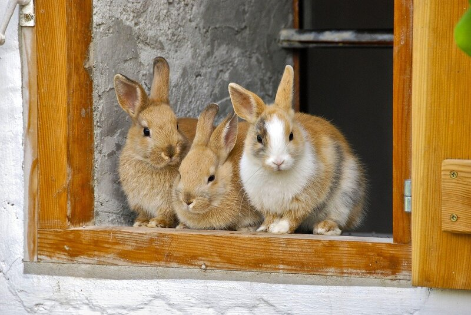
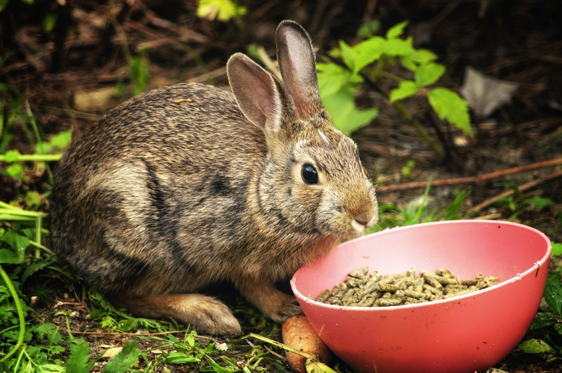

Conejo cabeza de leon
Caracterizados por su melena alrededor de la cabeza, son sociables y dóciles.
Conejo Toy
Muy pequeños (menos de \(1.5\) - \(2\) kg), ideales para espacios reducidos.
Conejo Angora
Requieren cepillado diario por su pelo largo, son cariñosos.